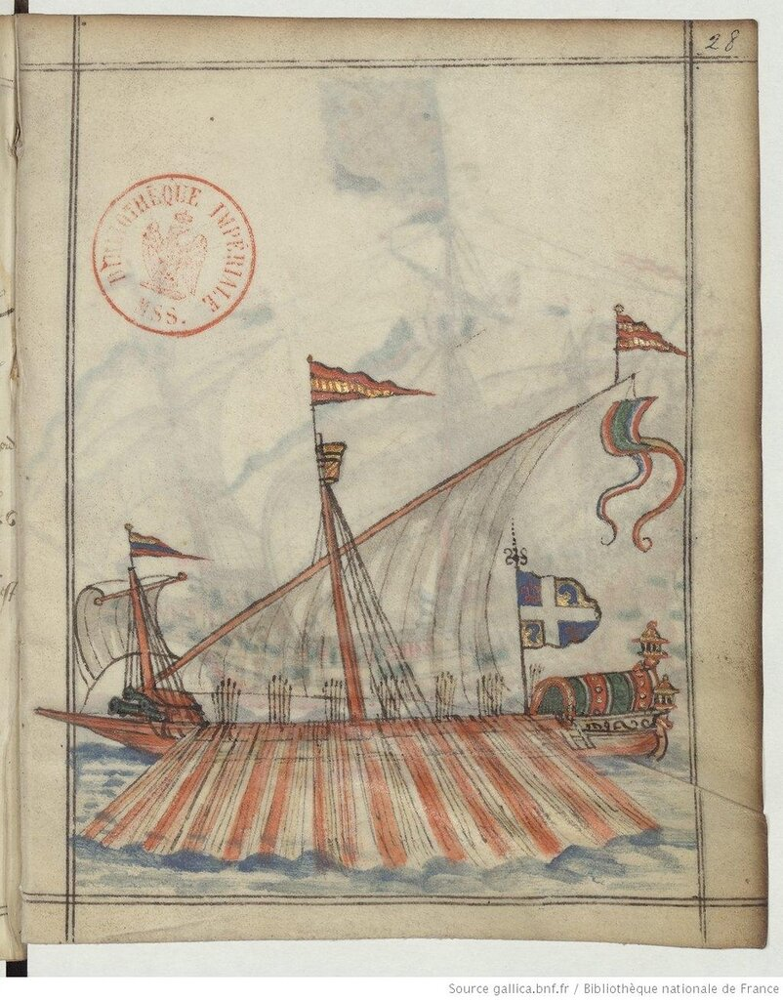
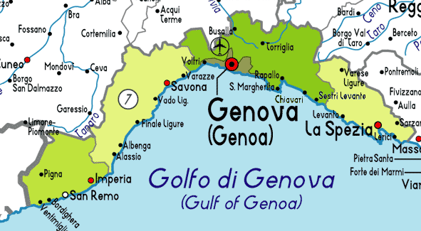
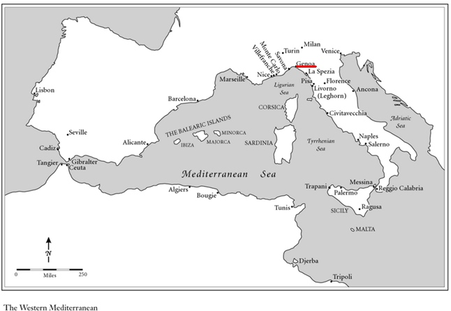
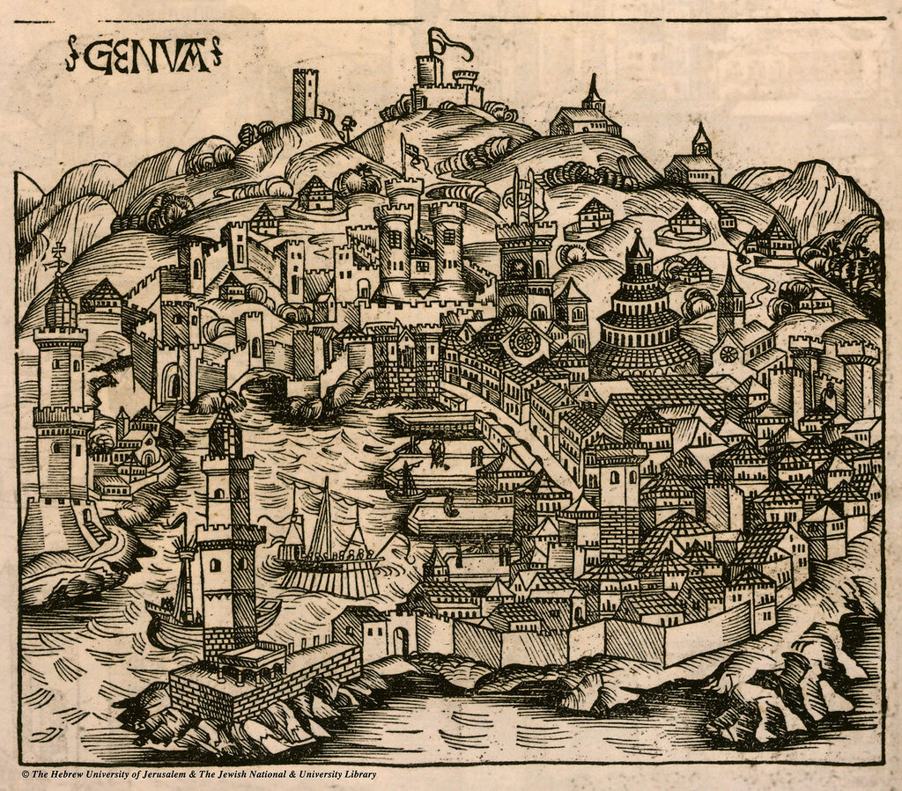
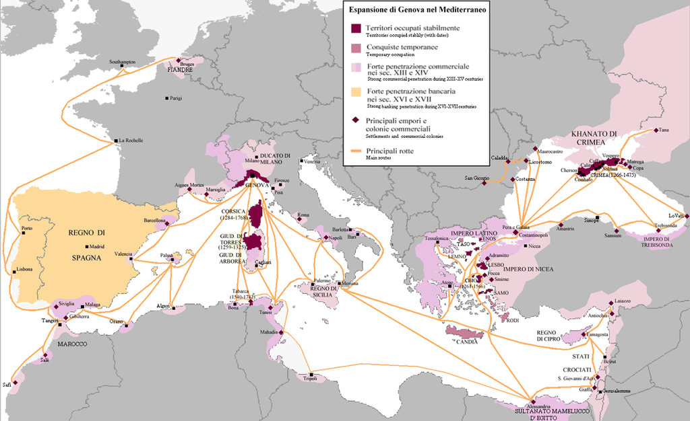

Становление Генуэзской империи
Один Менандр Семенович с прежним недоверием относился к сыну и, выслушивая его рассказы о самоновейших способах накопления богатств, невольно припоминал о Амалатке и Азаматке.
М. Е. Салтыков-Щедрин. Господа ташкентцы. Картины нравов
Хочу отметить одну особенность наших рассказов по истории галер и галерных флотоводцев. В них много говорилось о венецианских галерах, о галерах Франции, о гребных судах Османской империи, даже об английских и голландских мы что-то написали. А вот флотоводцы – почти все сплошь из Генуи. Достаточно упомянуть имена Андреа Дориа, Джованни Андреа Дориа, Федерико Спинолы, которым мы посвятили не один пост. В то же время стройного изложения истории генуэских галер не приведено. Вообще о Генуе мы говорили лишь вскользь. Попробуем исправить эту несправедливость.

Генуэзская галера. (G. Brouscon Manuel de pilotage, à l'usage des pilotes bretons, XVI век)
Если сравнивать нашу историческую литературу о Генуе и, скажем, о Венеции, то первая настолько незначительна по объему, что теряется на фоне Эвереста из книг и статей по венецианской тематике. Англоязычная литература также нас не очень балует источниками по истории Генуи. Венеция, или скажем Флоренция – это пожалуйста, в изобилии. А Генуя – лишь крохи на столе историков. Да и эти крохи, в основном, касаются генуэзских банкиров, что, конечно, справедливо. Что касается генуэзских моряков – то исследования о них написаны так, как будто они выросли за пределами своего отечества, никакой связи с морским делом в самой генуэзской Республике не прослеживается. Разве что биографии Андреа Дориа являются счастливым исключением. Но даже в этом случае мы больше узнаем об этом деятеле как об искусном политике, «Отце отечества» (Pater Patriae), чем как о флотоводце.
Морскую историю Генуи почему-то принято отсчитывать с возникновения постоянного флота, находящегося не в частной, а в общественной собственности республики, и создания 12 июля 1559 года специального органа по его управлению – Magistrato delle galere. Но это вряд ли справедливо по отношению к генуэзским морякам и флотоводцам более ранних эпох. Уместнее начинать отсчет генуэзской морской истории с той совокупности событий, которые принято объединять под единым названием Первый крестовый поход (1096-1099).
До этого времени история Генуи – это череда набегов мусульманских отрядов на лигурийское побережье (riviera ligure, которое позже превратилось в знакомую нам Ривьеру).

Лигурия. Итальянская ривьера
Этот период освещен в любопытной статье Робера Лопеса 1937 года (Robert Lopez. Aux origines du capitalisme genois. Annales E.S.C. 9 (1937)) Лопес ставит вопрос: как так получилось, что за пару веков Генуя, в которой еще в десятом столетии не было и намеков на флот и интересы населения которой вращались вокруг землевладения, стала основным поставщиком морских услуг устремившимся на Восток крестоносцам?
Лопес считает, что толчком послужили как раз те самые набеги арабов на Лигурию, которые мы упомянули выше. Земледельческое население Генуи не ограничилось возведением оборонительных сооружений, а включилось в активное противодействие мусульманским отрядам на дальних подступах к своей земле, в море.

Западное Средиземноморье
Первоначально для этой цели использовались примитивные суда крестьян, но очень скоро генуэзцы вошли во вкус морского разбоя и морской торговли, которые стали приносить основной доход, стали основой для первоначального быстрого накопления капитала. Подавив угрожавшие им арабские формирования на море и оттеснив их к Северной Африке и Балеарским островам, генуэзцы сразу же перешли к освоению прибрежных территорий Средиземноморья, появились первые генуэзские колонии и фактории, приносившие новые капиталы Так первоначальное стихийное стремление отразить набеги на свою территорию, последовавшие за этим пиратство и морской разбой, породили новое государственное образование с большими объемами свободных капиталов, которые естественным образом были вложены в банковское дело и морскую торговлю, а также, как указывает Стивен Эпштейн в своей книге Genoa and the Genoese, в пиратский промысел (резонно заметив, что even piracy requires start-up capital – даже для занятия пиратством требуется начальный капитал).

Генуя. Гравюра Хартмана Шеделя из Нюрнбергской хроники, 1493.
Не все историки согласны с приведенным выше мнением Робера Лопеса, но даже те, кто считает эти доводы ошибочными, не могут противопоставить им своей точки зрения, убедительно объяснившей бы столь скорое (за период от арабских набегов 934-935 гг. до Первого крестового похода 1096-99 гг.) становление не только экономически мощной, но и самодостаточной в военном отношении Генуэзской республики. Корабли генуэзского флота не только угрожали владениям арабов на территории нынешнего Туниса, но уже в 1060-х годах достигли египетской Александрии, а немного позже – отметились и в Каире. Явно прослеживается попытка генуэзцев перехватить у арабов посредничество в торговле между Востоком и Западом, хотя некоторые историки считают основным движущим стимулом религиозные мотивы. Удивительно, но очень уж часто в истории экономические и религиозные мотивы пересекаются, достаточно вспомнить нынешнее «исламское государство» в Леванте.
Хотя, как мы видим, морская история Генуи началась еще в десятом веке, принципиально важным для нее стало участие в Первом крестовом походе. Именно тогда Генуя получила свое первое заморское владение – тридцать домов в Антиохии, к которым прилагалась одна церковь и городская площадь с постоялым двором (fondaco). За этим последовало приобретение колоний в Кейсарии, Акре и Триполи. К середине двенадцатого века были созданы основные элементы генуэзской колониальной и торговой системы на Средиземном море. К концу тринадцатого века колониальные владения Генуи появились на побережье Черного и Азовского морей, в Эгейском море и на Кипре, затем в Иберии, Англии и Фландрии.

Карта колониальных владений и торговых форпостов Генуи по данным изсточников на конец 14 века (Codex Parisinus latinus (1395) in Ph. Lauer, Catalogue des manuscrits latins, pp.95-6)
Достаточно лишь одного взгляда на эту карту, чтобы понять, что без мощного флота существование империи было бы невозможно. Даже между отдельными пунктами самой Лигурии не существовало хороших сухопутных дорог, все общение осуществлялось морем.
Конкретную роль кораблей и моряков Генуи в становлении Генуэзской империи мы рассмотрим в следующих постах.